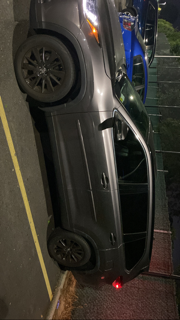

Growing up, I’ve always like to drive to places. Seeing the landscapes, monuments and different part of the world always excites me. Upon graduating high school, I decided to make a goal to get my first car before graduating college. I worked multiple jobs, restricted spending money and going out. After about 3 years of doing so I was able to put down a payment for my first car. She is a 7-seater highlander and drives beautifully on the open roads. With the absolutely beauty milage economy I’m able to drive pretty much everywhere without worrying about gas. This is one of my life long accomplishments as a young adult. Cheers to that !

This is how I drive when I see a pot hole
Driving